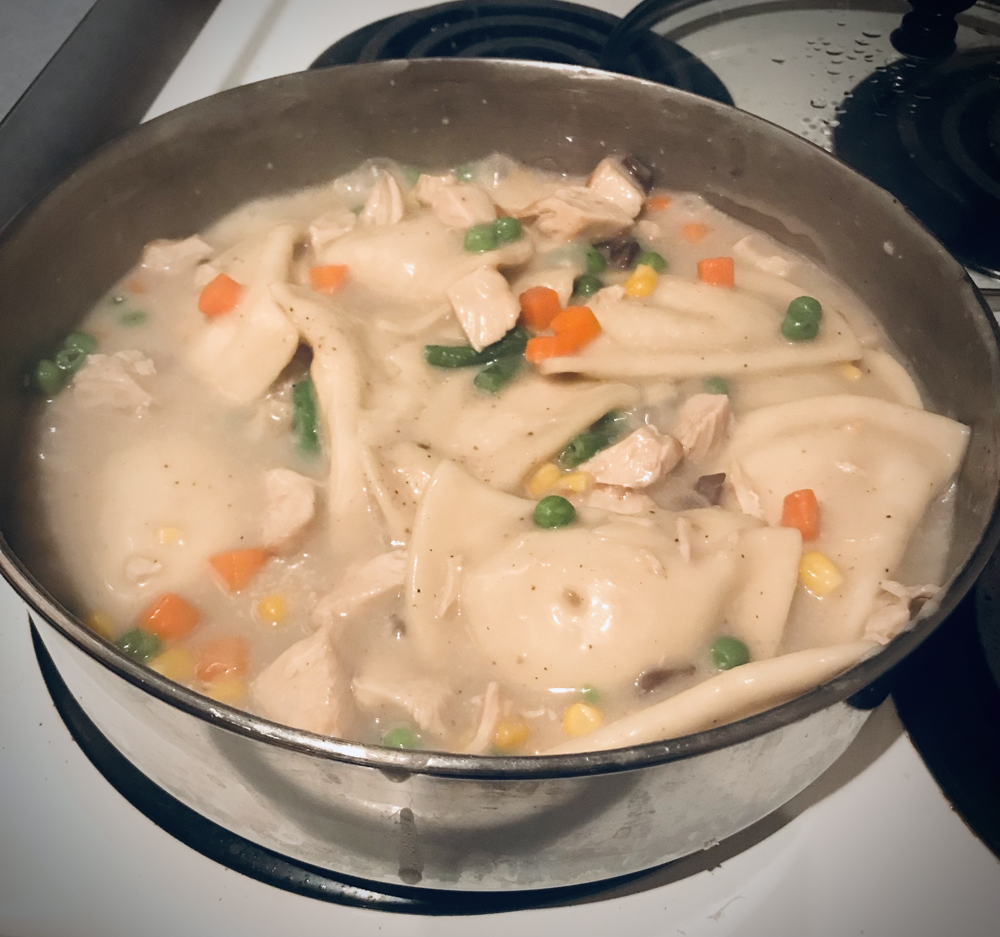

Pierogi Pot Pie

Description
This easy stovetop recipe pairs classic chicken pot pie filling
with potato pierogies for a delicious and filling one-pan meal.
Ingredients
- 1 lb. package frozen potato and onion pierogies
- 10 oz. Condensed Cream of Mushroom soup
- 12 oz. frozen mixed vegetables
- 1/2 cup milk (or milk substitute)
- 1/2 lb baked chicken, cubed
Steps
- Mix cream of mushroom soup with 1/2 cup milk in a large saucepan on high.
- Stir until soup has a smooth, creamy texture, then turn heat to medium
- Add frozen pierogies and frozen veggies and cover
- Simmer on low until pierogies are cooked (texture is soft and they appear to float).
- Add cubed chicken, stir, and serve.